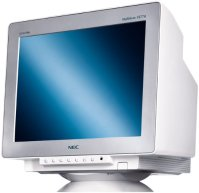
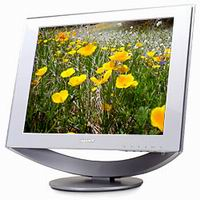

Cel mai important terminal al unui calculator este monitorul.
Din punct de vedere constructiv in prezent se realizeaza doua tipuri de monitoare.
Primul tip de monitoare CRT (Cathode Tub Ray) contine monitoare care sunt realizate pe baza
unui tub catodic.

O alta categorie de monitoare LCD (Liquid Crystal Display)
contine monitoare care sunt realizate pe baza cristalelor lichide sau matricilor active de
tranzistoare.
